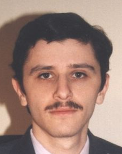

Евгений Рошал Лазаревич
(10 марта 1972)
Российский программист, автор известного файлового менеджера FAR Manager, формата сжатия RAR, архиваторов RAR и WinRAR, особенно популярных в России и странах бывшего СССР.
Евгений Рошал окончил Приборостроительный факультет Челябинского политехнического института по специальности «Вычислительные машины, комплексы, системы и сети».
Осенью 1993 года выпустил первую публичную версию архиватора RAR 1.3, осенью 1996 года — FAR Manager. Позднее, с ростом популярности Microsoft Windows, выпустил архиватор для Windows WinRAR. Название RAR означает Roshal ARchiver.